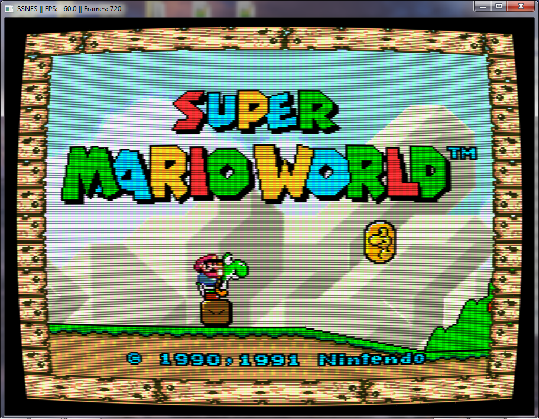
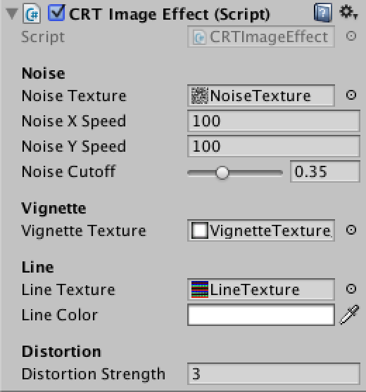
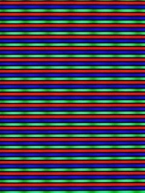
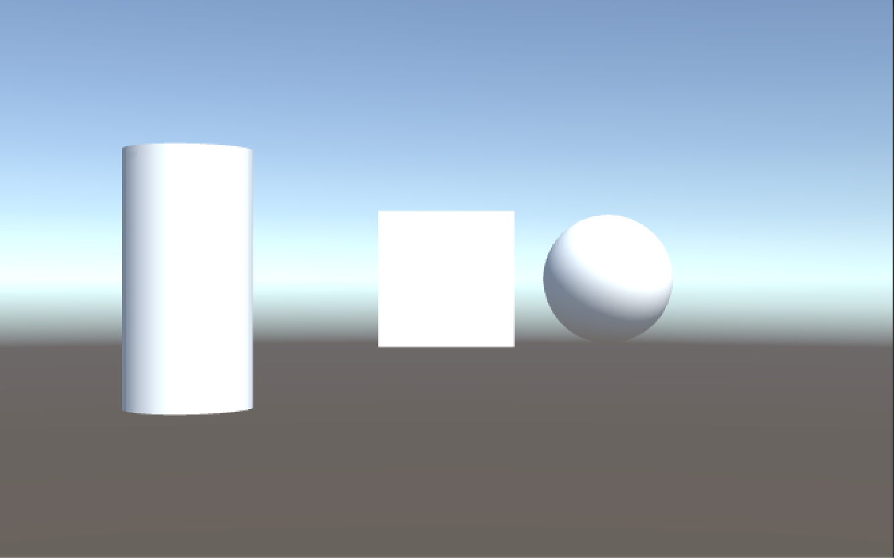
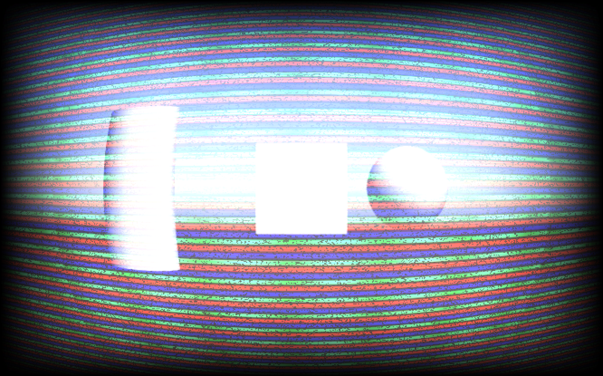

1. NoiseTexture

陰極射線管 Cathode ray tube 簡稱 CRT
這種效果在遊戲中往往會應用在復古效果的遊戲風格上

這次透過結合幾種效果
來試著模擬 CRT 效果
使用的效果有
1. Lens Distortion Lens Distortion White Paper
2. Noise Effect 【Unity】【Shader】Noise Image Effect
3. Scan line
4. Vignette texture
CRT shader.shader
Shader "Unlit/CRT Shader"
{
Properties
{
_MainTex ("Main Texture", 2D) = "white" {}
_NoiseTex ("Noise Texture", 2D) = "white" {}
_NoiseXSpeed ("Noise X Speed", Float) = 100.0
_NoiseYSpeed ("Noise Y Speed", Float) = 100.0
_NoiseCutoff ("Noise Cutoff", Range(0, 1.0)) = 0
_VignetteTex ("Vignette Texture", 2D) = "white" {}
_LineTex ("Line Texture", 2D) = "white" {}
_LineColor ("Line Color", Color) = (1, 1, 1, 1)
_DistortionSrength ("Distortion Strength", Float) = 1
}
SubShader
{
Cull Off
ZWrite Off
ZTest Always
Pass
{
CGPROGRAM
#pragma vertex vert
#pragma fragment frag
#include "UnityCG.cginc"
struct appdata
{
fixed4 vertex : POSITION;
fixed2 uv : TEXCOORD0;
};
struct v2f
{
fixed2 uv : TEXCOORD0;
fixed4 vertex : SV_POSITION;
};
v2f vert (appdata v)
{
v2f o;
o.vertex = mul(UNITY_MATRIX_MVP, v.vertex);
o.uv = v.uv;
return o;
}
uniform sampler2D _MainTex;
uniform sampler2D _NoiseTex;
uniform fixed _NoiseXSpeed;
uniform fixed _NoiseYSpeed;
uniform fixed _NoiseCutoff;
uniform sampler2D _VignetteTex;
uniform sampler2D _LineTex;
uniform fixed4 _LineColor;
uniform fixed _DistortionSrength;
fixed2 LensDistortion(fixed2 uv)
{
fixed2 center = uv - 0.5;
fixed r2 = center.x * center.x + center.y * center.y;
fixed ratio = 1.0 + r2 * _DistortionSrength * sqrt(r2);
return center * ratio + 0.5;
}
fixed4 frag (v2f i) : SV_Target
{
fixed2 distortionUV = LensDistortion(i.uv);
fixed4 mainTex = tex2D(_MainTex, distortionUV);
fixed4 vignetteTex = tex2D(_VignetteTex, i.uv);
fixed2 noiseUV = distortionUV + fixed2(_NoiseXSpeed * _SinTime.z, _NoiseYSpeed * _SinTime.z);
fixed4 noiseTex = tex2D(_NoiseTex, noiseUV);
if(noiseTex.r > _NoiseCutoff)
noiseTex = fixed4(1, 1, 1, 1);
fixed4 lineTex = tex2D(_LineTex, distortionUV);
lineTex *= _LineColor;
lineTex *= noiseTex;
fixed4 finalColor = mainTex;
finalColor *= vignetteTex;
finalColor += lineTex * vignetteTex;
return finalColor;
}
ENDCG
}
}
}CRTImageEffect.cs
using UnityEngine;
using System.Collections;
[ExecuteInEditMode]
public class CRTImageEffect : MonoBehaviour
{
[Header("Noise")]
public Texture noiseTexture;
public float noiseXSpeed = 100f;
public float noiseYSpeed = 100f;
[Range(0, 1.0f)]
public float noiseCutoff = 0.35f;
[Header("Vignette")]
public Texture vignetteTexture;
[Header("Line")]
public Texture lineTexture;
public Color lineColor = Color.white;
[Header("Distortion")]
public float distortionStrength = 3.0f;
private string m_noiseTexPropertyName = "_NoiseTex";
private string m_noiseXSpeedPropertyName = "_NoiseXSpeed";
private string m_noiseYSpeedPropertyName = "_NoiseYSpeed";
private string m_noiseCutoffPropertyName = "_NoiseCutoff";
private string m_vignettePropertyName = "_VignetteTex";
private string m_linePropertyName = "_LineTex";
private string m_lineColorPropertyName = "_LineColor";
private string m_nightVisionPropertyName = "_NightVisionColor";
private string m_distortionStrengthPropertyName = "_DistortionSrength";
private int m_noiseTexID;
private int m_noiseXSpeedID;
private int m_noiseYSpeedID;
private int m_noiseCutoffID;
private int m_vignetteTexID;
private int m_lineTexID;
private int m_lineColorID;
private int m_nightVisionID;
private int m_distortionStrengthID;
private Material m_material;
void Awake ()
{
InitPropertyIDs();
OnValidate();
}
private void InitPropertyIDs()
{
if(m_material == null)
m_material = new Material( Shader.Find("Unlit/CRT Shader") );
m_noiseTexID = Shader.PropertyToID(m_noiseTexPropertyName);
m_noiseXSpeedID = Shader.PropertyToID(m_noiseXSpeedPropertyName);
m_noiseYSpeedID = Shader.PropertyToID(m_noiseYSpeedPropertyName);
m_noiseCutoffID = Shader.PropertyToID(m_noiseCutoffPropertyName);
m_vignetteTexID = Shader.PropertyToID(m_vignettePropertyName);
m_lineTexID = Shader.PropertyToID(m_linePropertyName);
m_lineColorID = Shader.PropertyToID(m_lineColorPropertyName);
m_distortionStrengthID = Shader.PropertyToID(m_distortionStrengthPropertyName);
}
private void OnValidate()
{
if(m_material == null)
m_material = new Material( Shader.Find("Unlit/CRT Shader") );
m_material.SetTexture(m_noiseTexID, noiseTexture);
m_material.SetFloat(m_noiseXSpeedID, noiseXSpeed);
m_material.SetFloat(m_noiseYSpeedID, noiseYSpeed);
m_material.SetFloat(m_noiseCutoffID, noiseCutoff);
m_material.SetTexture(m_vignetteTexID, vignetteTexture);
m_material.SetTexture(m_lineTexID, lineTexture);
m_material.SetColor(m_lineColorID, lineColor);
m_material.SetFloat(m_distortionStrengthID, distortionStrength);
}
void OnRenderImage (RenderTexture source, RenderTexture destination)
{
Graphics.Blit (source, destination, m_material);
}
}接著將 CRTImageEffect.cs 附加到 Camera 上
並附加對應的貼圖

附上這次所使用的貼圖
1. NoiseTexture
2. VignetteTexture
3. LineTexture

原始畫面

CRT 畫面
